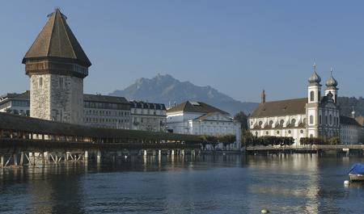

Lucerne, set on the shores of Lake Lucerne and surrounded by snow-capped mountains, is a charming Swiss city known for its medieval architecture and breathtaking views. With its iconic Chapel Bridge, historic old town, and proximity to Mount Pilatus and Mount Rigi, Lucerne perfectly blends cultural richness with natural beauty. Whether you're strolling along the lake, exploring museums, or taking a scenic mountain excursion, Lucerne is a must-visit destination for a quintessential Swiss experience.
Lucerne was for a time the capital of the Helvetic Republic, resuming its status as the cantonal capital in 1803. Divided into two parts by the Reuss River, which is crossed by seven bridges within the town, Lucerne has one of the most picturesque settings in Switzerland.
